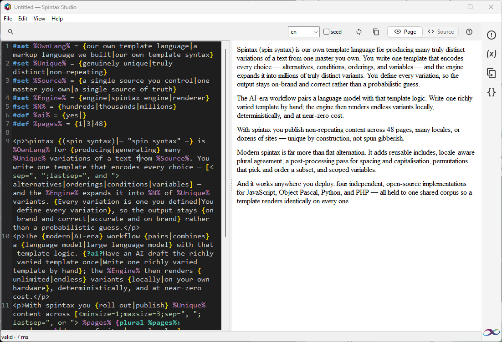

01
Write with the language
Bracket matching, syntax colours and a fixed-pitch editor keep alternatives, variables, conditions and directives easy to scan.
Native Windows editor / R0 release
Write one controlled template. Inspect what it means. Generate distinct variants locally.
A focused workspace for authors who need their template language, rendered result and diagnostics in view at the same time.

A readable authoring loop
Spintax Studio is built around the moment an author changes a template and needs to know what happened next.
Bracket matching, syntax colours and a fixed-pitch editor keep alternatives, variables, conditions and directives easy to scan.
The preview is rendered by the same engine used across the Spintax family. What you see is not a second parser's approximation.
Diagnostics point to the source position, explain the rule and connect to built-in help with measured examples.
Inspect variables and includes, edit groups, generate seeded variants and export the result without a runtime or network service.
The workflow
Compose the choices and rules that define your content.
Follow a diagnostic to the exact bracket, directive or definition.
Read the rendered page or inspect the generated source.
Generate deterministic variants and take the files where they belong.
R0 release
Spintax Studio does not require an account, a model key or a connection. Documents stay on your computer and the editor does not include generative AI in this release.
Read the full privacy policyOne language family
The editor consumes the open-source Spintax engine used by the JavaScript, PHP and Python implementations. One corpus keeps the language behaviour aligned across deployments.
See the engine on GitHub